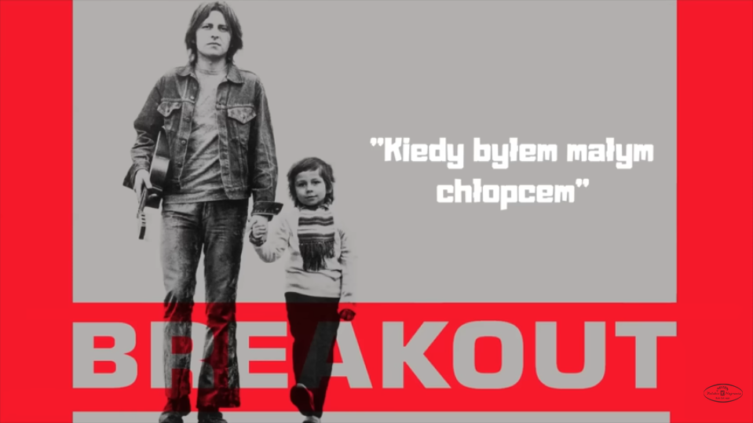

Dzień chłopaka
30 września
Wszystkiego Najlepszego!
Oto lista najbardzej zananych
piosenek o chłopakach:
Karin Stanek - Chłopiec z gitarą
Sabrina - Boys
T.Love - Chłopaki nie płaczą

Michael Jackson - Man in the mirror
Breakout - Kiedy byłem małym chłopcem
Wham! – I’m Your Man
Abba – Gimme! Gimme! Gimme! A Man After Midnight
K.A.S.A. – Maczo
Elton John – Rocket Man
ZZ Top - Sharp Dressed Man
Black Keys - Lonely Boy